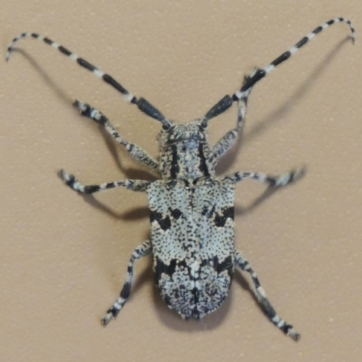

Synaphaeta guexi
Common name
Spotted Tree Borer
Family
Cerambycidae
Family common name
Long-horned beetles
Commonly observed
January to September
Size
Females about 2.8 cm; males about 1.8 cm
Range Map
Seasonality